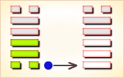
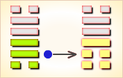
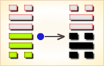
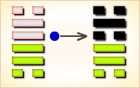
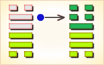

周易第28卦_大过卦(泽风大过)_兑上巽下
如有疑问互相交流，微信：470283584
周易第28卦详解
大过卦原文
大过。栋桡。利有攸往，亨。
象曰：泽灭木，大过。君子以独立不惧，遁世无闷。
白话文解释
大过卦：屋粱压得弯曲了。有所往则有利，通泰。
《象辞》说：本卦上卦为兑为泽，下卦为巽为木，上兑下巽，泽水淹没木舟，这是大过的卦象。君子观此卦象，以舟重则覆为戒，领悟到遭逢祸变，应守节不屈，稳居不仕，清静淡泊。
《断易天机》解
大过卦兑上巽下，为震宫游魂卦。大过即太过，事情过头了，但大过卦仍是中庸顺从之象，主其人得协助、能前进。
北宋易学家邵雍解
阳多阴少，势将颠覆；本未俱弱，量力而为。
得此卦者，身心不安，事不如意，却又强意而行，大有后悔之时，谨防官非及水险。
台湾国学大儒傅佩荣解
时运：收敛自省，未可求名。
财运：低价高涨，不易把握。
家宅：防止倾斜；老少配婚。
身体：肝肾皆累，不易治好。
传统解卦
这个卦是异卦（下巽上兑）相叠。兑为泽、为悦，巽为木、为顺，泽水淹舟，遂成大错。阴阳爻相反，阳大阴小，行动非常，有过度形象，内刚外柔。
大象：中间四阳爻，为结实之梁，但初末为阴爻，力弱不支，则势将摧折。
运势：有力不从心，负担过重之象，多烦恼，防官非及水险。
事业：事业出现隐患，甚至危机四伏，务必十分小心谨慎，唯有坚守中道，以谦虚和悦的手段，胆大心细，求助他人相助。必要时可采取非常手段，不拘常规，予以冒险。
经商：操之过急，发展过快，宜收缩调整。竞争处于不利地步，切勿过度自信，更不得刚愎自用，宜随时观测风向，待机行动。在有确切把握之下，不妨冒险，争取时机的好转。
求名：最忌不务实际，追求不切实际的虚名，以致盛名不符。唯以谦逊态度，谨慎行动，潜心努力，不怕世人眼舌，一往直前，追求最初的目标。
婚恋：自知之明最为重要，不可急于求成，应慎重考虑，并以正当手段，促成事情的成功。但也不排除必要的精明手段。
决策：处在非常时期，若不能妥善处置，则极为不利，针对实际情况，既不可轻举妄动，也不可优柔寡断，而应刚柔相济，虚心征求他人意见，慎重行动，大胆追求，却又不怕流言，争取时局好转。
台湾张铭仁解卦
大过：表示犯了一个很大的过错，主大凶。诸事不顺，切忌此时作任何的决策。需努力找出问题之所在，尽快解决才能扭转劣势。
解释：极大过失。
特性：心直口快，性急，易得罪他人，是非小人多，但交际层面广，朋友多，但也易受朋友之拖累。
运势：诸事衰退，多烦恼，防官非及水险。有力而不从心，负担过重之象。逢挫折而将坠落之时运，故得此卦者，凡事切忌轻举妄动，否则有过。
家运：困难重重，摇摇欲坠之衰运。夫妻感情不睦，且均有向外发展之趋势，若想挽回此破象，双方宜改正自己的缺点，否则破裂也。
疾病：严重，须耐心治疗，为肺、神经系统，女占得妇科经带之疾。
胎孕：女儿或男儿均与六亲缘薄，育养困难。
子女：子女与双亲间感情薄弱，又缺乏谅解，有症结也。
周转：无啥希望。
买卖：不可做超过自己本身财力之生意交易，否则定有折损，亦不成。
等人：不会来。
寻人：不易找到，可向东南方或西方，难寻。但若动用人手共寻找，可见。
失物：无法发现，不能物归原主。
外出：行动务必慎重，但不可过于拘泥，必要时不妨采取特殊行动。
考试：苦恼也，不佳。
诉讼：有文书之烦，即使求和也未能如愿。
求事：困难很多。
改行：不宜图不相应之事。
开业：开业尚属虚，且待时候。
周易第28卦初六爻详解
初六爻辞
初六。藉用白茅，无咎。
象曰：藉用白茅，柔在下也。
白话文解释
初六：恭敬地用白茅垫着祭品，可以无灾祸。
《象辞》说：“恭敬地用白茅垫着祭品”，柔软之物铺垫在下面，正像初六阴爻居一卦之下位。
北宋易学家邵雍解
平：得此爻者，谨慎行事，财利可固。凶者，防孝服之忧。做官的小心谨慎则禄位巩固。
台湾国学大儒傅佩荣解
时运：宽柔待人，一起成功。
财运：柔白之货，可以获利。
家宅：环境荒芜。
身体：病体柔弱，温燥之药。
初六变卦

初六爻动变得周易第43卦：泽天夬。这个卦是异卦（下乾上兑）相叠。乾为天为健；兑为泽为悦。泽气上升，决注成雨，雨施大地，滋润万物。五阳去一阴，去之不难，决（去之意）即可，故名为夬（guài），夬即决。
周易第28卦九二爻详解
九二爻辞
九二。枯杨生稊，老夫得其女妻，无不利。
象曰：老夫女妻，过以相与也。
白话文解释
九二：枯杨发芽，老头子娶少女为妻，并无不吉利。
《象辞》说：夫老妻少，年龄不当，这是错误的婚配。
北宋易学家邵雍解
吉：得此爻者，或娶妻纳妾，或生子，君子得少妻义子。做官的去位者会复职。
台湾国学大儒傅佩荣解
时运：晚年成名，反败为胜。
财运：林木生意，应可获利。
家宅：枯树开花；老夫少妻，得以生育。
身体：虽危得安。
九二变卦

九二爻动变得周易第31卦：泽山咸。这个卦是异卦（下艮上兑）相叠。艮为山；泽为水。兑柔在上，艮刚在下，水向下渗，柔上而刚下，交相感应。感则成。
周易第28卦九三爻详解
九三爻辞
九三。栋桡，凶。
象曰：栋桡之凶，不可以有辅也。
白话文解释
九三：屋梁弯曲，这是凶险之象。
《象辞》说：屋梁弯曲之所以凶险，因为栋曲即屋倾，无法支撑。
北宋易学家邵雍解
凶：得此爻者，须防大难而遭致家产有失，或有足目之疾。做官的须谨防被贬职。
台湾国学大儒傅佩荣解
时运：刚愎自用，虽成终败。
财运：只靠自己，人财两失。
家宅：栋折难居；婚姻不利。
身体：恐有不测。
九三变卦

九三爻动变得>周易第47卦：泽水困。这个卦是异卦（下坎上兑）相叠。兑为阴为泽喻悦；坎为阳为水喻险。泽水困，陷入困境，才智难以施展，仍坚守正道，自得其乐，必可成事，摆脱困境。
周易第28卦九四爻详解
九四爻辞
九四。栋隆，吉。有它吝。
象曰：栋隆之吉，不桡乎下也。
白话文解释
九四：屋梁挺直，吉利。但有意外之患则不好应付。
《象辞》说：屋梁挺直之所以吉利，因为屋梁不弯曲则房屋不倾倒。
北宋易学家邵雍解
吉：得此爻者，多有修造之事，可做大事，勿谋小事。做官的必能受到重用。读书人进取成名。
台湾国学大儒傅佩荣解
时运：可担大任，勿图小事。
财运：木材生意，可以得利。
家宅：门户宏伟。
身体：胸胀无碍。
九四变卦

九四爻动变得周易第48卦：水风井。这个卦是异卦（下巽上坎）相叠。坎为水；巽为木。树木得水而蓬勃生长。人靠水井生活，水井由人挖掘而成。相互为养，井以水养人，经久不竭，人应取此德而勤劳自勉。
周易第28卦九五爻详解
九五爻辞
九五。枯杨生花，老妇得其士夫，无咎无誉。
象曰：枯杨生花，何可久也。老妇土夫，亦可丑也。
白话文解释
九五：枯杨开花，老妇人嫁给一个年轻人，这件事不好也不坏。
《象辞》说：枯杨开花，其花怎能长开不谢。老妇人嫁给年轻人，这种事总不大光彩。
北宋易学家邵雍解
平：得此爻者，营谋不利，或喜中生忧，美事成丑；先逆后顺之象。做官的不可久任。
台湾国学大儒傅佩荣解
时运：晚年得意，求其平顺。
财运：小心多情，名利皆失。
家宅：闺房不正；女大男小。
身体：不好不坏。
九五变卦

九五爻动变得周易第32卦：雷风恒。这个卦是异卦（下巽上震）相叠。震为男、为雷；巽为女、为风。震刚在上，巽柔在下。刚上柔下，造化有常，相互助长。阴阳相应，常情，故称为恒。
周易第28卦上六爻详解
上六爻辞
上六。过涉灭顶，凶，无咎。
象曰：过涉之凶，不可咎也。
白话文解释
上六：盲目涉水，水深过顶，虽遇凶险，但终归没有灾难。
《象辞》说：盲目涉水遭致危险，事已至此，谴责亦属无益。
北宋易学家邵雍解
凶：得此爻者，不宜进取，退守为安，面部或有疾。做官的有功高震主身危之祸。
台湾国学大儒傅佩荣解
时运：下过苦工，赢得声名。
财运：出货谨慎，以免失利。
家宅：小心水灾。
身体：颜面浮肿，可能难治。
上六变卦
上六爻动变得周易第44卦：天风姤。这个卦是异卦（下巽上乾）相叠。乾为天，巽为风。天下有风，吹遍大地，阴阳交合，万物茂盛。姤（gǒu）卦与夬卦相反，互为“综卦”。姤即媾，阴阳相遇。但五阳一阴，不能长久相处。